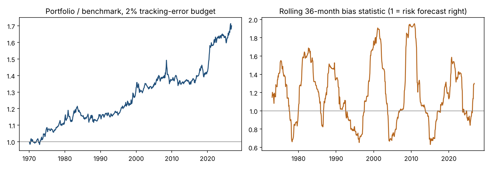
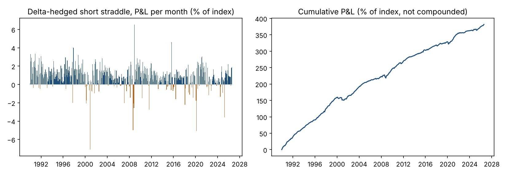
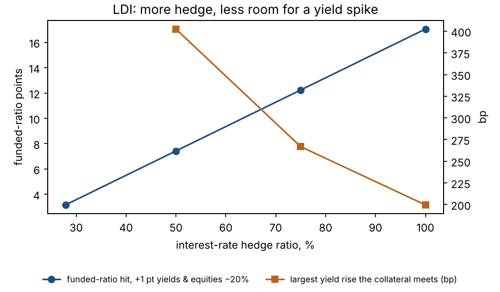
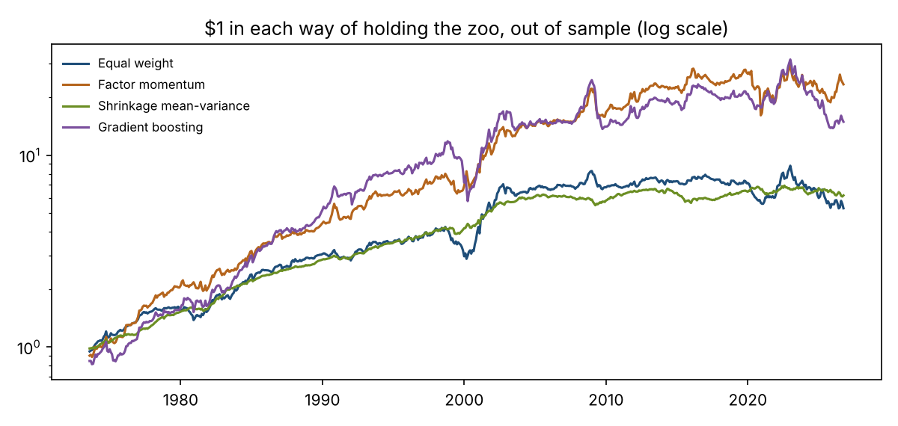

05 Capital markets, risk and private markets · Tested toolkit
Quant and institutional toolkit
The machinery around a portfolio, built and tested on public data: risk models, attribution in SQL, VaR backtests, derivatives and rates, LDI liquidity stress, private-markets pacing, an anomaly zoo, Excel models checked against Python, a LoRA fine-tune and a deployed model service.
Stack Python, cvxpy, SciPy, DuckDB SQL, Excel, PyTorch, Hugging Face PEFT, ONNX Runtime, FastAPI, Docker, Kubernetes, MLflow, pytest
Risk, optimisation and attribution
A long-only portfolio against the cap-weighted market of 30 US industries, decided each month with past data only, 1970-01 to 2026-09.
- Factor risk model. Market, size and value loadings from 60 months of returns, plus each industry's own risk; ex-ante risk split into factor and specific parts that add up exactly.
- Black-Litterman. Start from the returns the benchmark implies; move toward one momentum view sized from the previous ten years.
- Tracking-error budget. Maximise expected return within 2% tracking error, long-only, at most ten points over any benchmark weight (cvxpy). Net of costs: 1.08% a year active (Newey-West t 3.35), information ratio 0.43. The view was chosen knowing an earlier momentum result, so this shows the machinery, not an edge.
- Was the risk forecast right? The bias statistic (1 is perfect) was 1.25 for the factor model, 1.11 for a Ledoit-Wolf covariance: the three-factor model under-forecasts the risk of sector bets.
- Brinson-Fachler attribution, Carino-linked. 0.93% a year from allocation, 0.43% from selection. The same calculation in SQL (DuckDB) agrees with pandas to 4e-15.

Source: reports/institutional/summary.json (deep-portfolio-constructor @ d10f3c7)
Value at risk, backtested
A 99% one-month VaR of the US stock market forecast each month from the previous 120 months, 1936-07 to 2026-09. A sound model is exceeded in 1% of months (Kupiec) and its exceptions do not cluster (Christoffersen).
| Model | Exceptions (expected) | Kupiec p | Christoffersen p |
|---|---|---|---|
| Historical simulation | 23 (10.8) | 0.001 | 0.011 |
| Normal | 24 (10.8) | 0.001 | 0.014 |
| EWMA volatility | 17 (10.8) | 0.082 | 0.265 |
Derivatives and the volatility risk premium
Selling a one-month straddle on the US market at the VIX and hedging its delta every day earned 0.87% of the index a month from 1990-01 to 2026-08 (Newey-West t 12.7).
- Positive in 83% of months; the losses come in a few crashes: 2000-12, 2020-03, 2008-09. The VIX sits above at-the-money volatility, so this overstates the premium somewhat.
- The library: Black-Scholes-Merton, Black-76 and Bachelier with Greeks and implied volatility; American options on binomial trees; Monte Carlo with antithetic and control variates; SABR calibration; Treasury curve bootstrapping, swaps and DV01. Every formula is checked against Hull's textbook values or an identity.
- Hull's Example 15.6: call 4.7594 (book 4.76). Early-exercise premium of an American put: 0.208.

Source: reports/derivatives/summary.json (deep-portfolio-constructor @ d10f3c7)
Pensions: liabilities, LDI and currency
- The promise with mortality. A closed cohort under the Gompertz-Makeham Standard Ultimate Survival Model; solvency duration 16.4; death rates 20% lower add 6.8% to the liability. Key-rate durations on a Nelson-Siegel-Svensson Treasury curve (median fit 3.0 bp; level, slope and curvature explain 98.6% of curve moves).
- LDI with a swap overlay. A full hedge takes 1.83× leverage and its collateral covers a 200 bp rise; the worst month for the US 30-year yield since 1977 was 208 bp. Hedging steadies the funded ratio and creates liquidity risk: the 2022 UK LDI lesson. The swap was priced on the bootstrapped curve, which corrected the stress test's duration.
- Currency. For a Canadian investor in US stocks (1971-02 to 2026-09), the minimum-variance hedge ratio is 0.00: the US dollar rose 2.4% on average in the 24 worst months for US stocks.

Private markets and spreadsheets
- Pacing a programme. Takahashi-Alexander fund cash flows (TVPI 1.71×). To hold 25% in private assets the plan commits 5.0% of its assets a year and needs 8 years to reach 90% of target; a 30% public crash lifts the private share from 25.0% to 33.4%: the denominator effect.
- Desmoothing. Geltner's correction recovers volatility that appraisal smoothing hides (7.0% reported against 14.9% true, 12.6% recovered).
- Excel, with live formulas. An LBO with a senior loan, cash sweep and private-credit tranche (2.45× and 19.6%; leverage 5.5× to 2.6×), and a 20-year pension funding model. LibreOffice recalculates both and they match Python to 5e-13. LBO workbook · Pension workbook
Source: excel/verification.json (deep-portfolio-constructor @ d10f3c7)
The anomaly zoo
Fifteen published equity anomalies, 1963-07 to 2026-09: 4 clear t = 1.96, 1 clears 3.0, and returns fell from 6.3% to 1.3% a year after the papers appeared.
| Strategy | Sharpe | Since 2000 | Against equal weight |
|---|---|---|---|
| Equal weight | 0.39 | 0.26 | the benchmark |
| Factor momentum | 0.53 | 0.37 | no detectable difference |
| Shrinkage mean-variance | 0.86 | 0.34 | better |
| Gradient boosting | 0.45 | 0.26 | no detectable difference |

Momentum's Newey-West t: 4.56. Source: reports/anomalies/summary.json (deep-portfolio-constructor @ d10f3c7)
Fine-tuning a language model
roberta-base with LoRA adapters (0.71% of its parameters trained, on a CPU) reads central-bank sentences as dovish, hawkish or neutral.
| Model | Macro-F1 | Accuracy |
|---|---|---|
| Majority class | 0.222 | 49.8% |
| TF-IDF + logistic regression | 0.561 | 59.3% |
| roberta-base + LoRA | 0.663 | 68.3% |
LoRA minus TF-IDF: +0.102 (90% CI +0.060 to +0.145): helps. Out of domain, on 206 Bank of Canada statements, the classifier's stance correlates with the next decision at 0.33 (90% CI 0.21 to 0.44), though little of that survives once today's decision is known.
Data: Shah, Paturi and Chava (ACL 2023). Source: results/stance/test.json (world-shock-lab @ 0e93ee5)
Serving and MLOps
- Export. The forecasting model's forward pass as an ONNX graph, matching PyTorch to 2e-06.
- Service. FastAPI with ONNX Runtime in a two-stage Docker image that CI builds and calls; Kubernetes manifests with probes and an autoscaler; Prometheus metrics and input-drift monitoring by population stability index; an MLflow run and model registry.
- Latency (one thread, one series): PyTorch 2.4 ms, ONNX 1.9 ms, int8 1.2 ms; int8's loss is 0.995× fp32's on 256 held-out series.
Source: results/serve/bench_cpu_1thread.json (tsfm-from-scratch @ e8bc109)
Read with care
- Only the language-model test was pre-registered; the rest are tested tools run once on public data, and each report says so.
- Industries and decile portfolios, not stocks; gross of most trading costs; a three-factor risk model; a textbook mortality table; illustrative private-fund parameters.